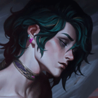

起手組件
 增幅典籍
增幅典籍先取得魔攻組件，控制技能保留反突進；按開局可用金錢補齊魔力或鞋子組件。

校正至 7.3d · 2026-10-28。Tier與配置是本站的模式策略判斷，不是官方勝率排名。
起手組件 → 一階鞋或首件核心（依壓力調整）→ 核心成裝 → 鞋子升級 → 情境後續裝。五件成裝加一雙鞋；鞋子兩張圖表示升級前後，不是同時購買兩雙。
先取得魔攻組件，控制技能保留反突進；按開局可用金錢補齊魔力或鞋子組件。

QE能讓多個目標持續處於燃燒，配合魔力與技能加速維持遠距施法；別為疊多目標被動走入突進範圍。

QE持續區域傷害適合對付高生命前排；敵方都是脆皮且交戰很短時，這格的持續燃燒不如立即爆發。

在已有魔力與施法循環後放大整套技能的魔攻收益；逆風先處理存活問題，不為高價成裝耽誤保命。

敵方開始堆魔防後，用百分比魔穿維持對前排的壓力；不要把穿透當成繞過站位問題的答案。

赫威：在對方關鍵爆發或集火時開啟停滯；停滯期間不能輸出，也需安排結束後的位置。

補早期魔攻、固定穿透及回魔，讓清線與施法節奏更穩；對手突進威脅大時，鞋子路線可改防禦取向。

赫威：魔力之靴升級，提供法傷路線的穿透與續航；需按敵方魔防與生存壓力決定完成時機。

保留作躲開關鍵控制與突進，別為了一次消耗位移到前排身旁。

被貼身時配合EQ保住第一輪生命；護盾不是免控，仍需留走位空間。

遠距消耗和控制後接技能，讓彗星較容易落點。

以反覆命中英雄支援魔力路線，不把它當成無條件回魔。
技能加速有助於取得下一個主題的施法窗口。
選擇延長對戰的魔攻成長；前期仍靠安全清線而非硬換血。

降低被突進連段時的第一輪壓力；不代替EQ與走位。
1 技 > 3 技 > 2 技
開局三個主題各一點，主升災難、次升折磨；大絕可點時優先。切換主題不是額外可投入的技能點。
保持兵線後方，先以WE補回魔力，再用QE限制路口。敵方前排往前壓時保留EQ，別同時交掉災難與折磨後才找退路。
以QE分隔狹窄戰場，等隊友控制命中後再接EE與大絕；QW用來收尾已被限制的低血量敵人，不在兵線壓力大時盲等狙擊。
接戰前先確認要的是EQ自保、EW封路或EE聚怪。同一主題共享冷卻，選錯控制後不能立即用另一招補救；先活著打第二輪，而不是為大範圍畫面交光所有選項。

敵方治療已阻止團隊集火時，替換末段輸出格
以QE等持續法傷覆蓋重創；同隊已有可靠重創時，不必每局重複負擔此格。

敵方依賴單次關鍵法術開戰時，替換中婭以外的一格或與主動保命擇需
擋住單次遠距開戰法術，保留EQ自保；對方能用小技能輕易消耗護盾時，價值會下降。

大型護盾反覆抵銷傷害且團隊缺乏反盾時
面對反覆的大型護盾時，用技能削弱護盾；它不是重創裝，不用來處理單純治療。
目前核對的官方公告未提供赫威標準ARAM專屬倍率總表；本欄不填猜測值，請以當局模式增益為準。
用災難主題清線、折磨主題阻止突進，選擇平靜主題支援魔力與走位。每個主題共用冷卻，不能把同一主題的三種法術當成三個獨立冷卻連續施放。
先確認卡片完整效果與本局陣容，再選配裝；沒有足夠資料的單卡不填虛構S+排名。
核心
各主題法術能提供持續技能觸發；同一主題仍共用冷卻。
高適配
先確認EQ、EW或EE能否滿足卡片的硬控觸發條件。
適配
依完整卡片效果判斷爆發或持續觸發，不將整類都視為必選。
沒有改變輸出機制的增幅
以7.3c標準ARAM基底維持角色功能；取得明確改變機制的卡片後再調整。
QE能讓多個目標持續處於燃燒，配合魔力與技能加速維持遠距施法；別為疊多目標被動走入突進範圍。
QE持續區域傷害適合對付高生命前排；敵方都是脆皮且交戰很短時，這格的持續燃燒不如立即爆發。
在已有魔力與施法循環後放大整套技能的魔攻收益；逆風先處理存活問題，不為高價成裝耽誤保命。
敵方開始堆魔防後，用百分比魔穿維持對前排的壓力；不要把穿透當成繞過站位問題的答案。
赫威：在對方關鍵爆發或集火時開啟停滯；停滯期間不能輸出，也需安排結束後的位置。
補早期魔攻、固定穿透及回魔，讓清線與施法節奏更穩；對手突進威脅大時，鞋子路線可改防禦取向。
赫威：魔力之靴升級，提供法傷路線的穿透與續航；需按敵方魔防與生存壓力決定完成時機。
分類與單卡評級是本站條件式建議。新卡完整效果未核實時不補造數值；當局抽到的卡片會改變優先順序。
7.3d／2026-10-28：本輪核對公告共通差異、現行裝備與符文引用，保留 v123 的既有攻略。標準 ARAM 倍率沿可追溯歷史基準，未套用符文大亂鬥專屬倍率；Tier 為本站建議，非新版勝率或全技能實測。